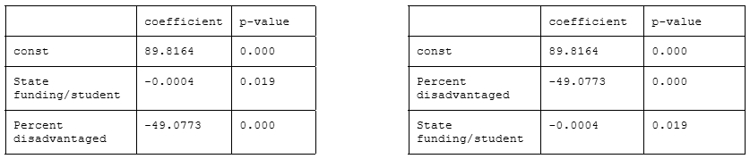

Conducted for Dr. Taylor Weidman's "Economic Data Analysis" course.
Achievement in secondary-level education is a significant predictor of future success. As such, I was interested in exploring the influence of two factors on public school testing performance: a district’s state funding per student and its volume of students with economic disadvantages. States allocate more funds to schools with lower test scores to provide additional support, so the anticipated result is a negative relationship between scores and funding; that is, scores will be lower at schools receiving additional funding. We can expect a similar negative relationship between scores and economic disadvantage based on the assumption that students with less access to academic resources at home will score comparatively lower.
To perform these analyses, I used publicly available data from the Pennsylvania Department of Education. The first dataset lists the dollar amount of funding per student each of the state’s public school districts received from local, state, federal, and other sources in 2022/23.[1]Figure 1shows the distribution of state funding, which is right-skewed with most schools receiving in the area of $5,000 per student.
The second dataset describes the percentage of public high school juniors scoring in each of four possible categories on Pennsylvania’s state-administered Keystone exams in 2023.[2]The dataset breaks down student scores by district demographics, including students with economic disadvantages.Figure 2shows the distribution of pass rates (that is, the combined percentage of students scoring in the “Proficient” and “Advanced” categories) for all students in blue and for economically disadvantaged students in red. Scores for economically disadvantaged students are comparatively lower than for students in general.
I performed my analyses using Google Colab and its built-in AI tool, Gemini.[3]To perform my first analysis, I used a statistical model to predict test scores using state funding, controlling for the effect of economic disadvantages.Figure 3shows said statistical model and a visualization of the resulting relationship.
scores = Β0 + Β1 × funding + Β2 × disadvantage + ε
The second analysis evaluated student economic disadvantage as a predictor of test scores, this time controlling for the impact of state funding.Figure 4shows an alternative statistical model with the two variables inverted from the previous analysis and the scatter plot produced by this linear regression.
scores = Β0 + Β1 × disadvantage + Β2 × funding + ε
*Note: residual plots showed mild heteroskedasticity, which was accounted for by applying robust standard errors to both models.
Table 1shows the linear regression output of Analysis 1 (scores predicted by funding, holding student disadvantage constant) whileTable 2shows the regression results for Analysis 2 (scores predicted by student disadvantage, holding funding constant).
These results indicate the following:
The regression results are consistent with the anticipated results and reveal the magnitude of each variable of interest, with the influence of economic need exceeding that of state funding.
To summarize, these regression models suggest that a student’s economic status greatly outweighs their school’s funding as a predictor of their success on standardized tests. While state-level resources have a distinct impact on testing outcomes, the much more powerful factor influencing performance is the resources a student receives at home.
[1]Pennsylvania Department of Education. Assessment Reporting, Keystone Exam, District Level Data, 2023.
[2]Pennsylvania Department of Education. School Finances, Financial Data, AFR Data: Summary Level, Revenue Data 2022-2023. Tested data retrieved from file's second tab: "2022-23 Rev per ADM."
[3]Gemini, https://gemini.google.com/app. Used to clean and transform dataframes; code plots to visualize key variables and relationships.